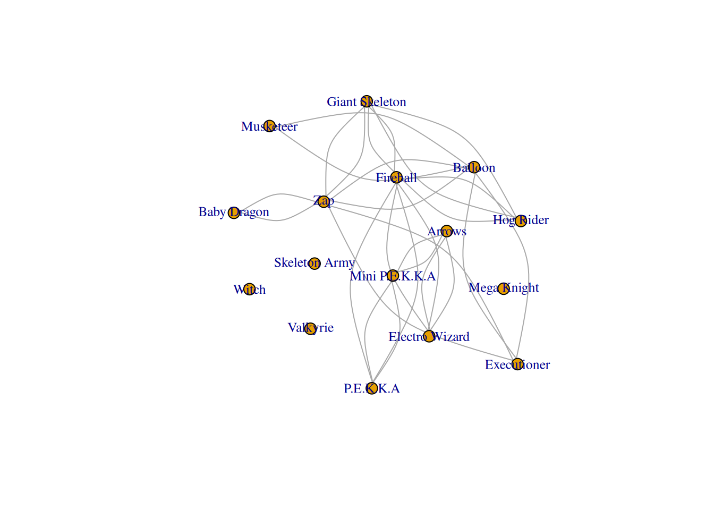

Clash Royale Card Synergy: A Network Analysis Tutorial
Network Analysis
Data Visualization
igraph
R
A network analysis tutorial exploring card synergy in Clash Royale using Season 3 deck data.
Authors
Affiliation
Kevin Euyoque
St. Lawrence University
Ivan Ramler
St. Lawrence University
Published
April 1, 2026
Please note that these materials have not yet completed the required pedagogical and industry peer-reviews to become a published module on the SCORE Network. However, instructors are still welcome to use these materials if they are so inclined.
1 Welcome Video
If you are unfamiliar with Clash Royale, you can watch this short gameplay video for an introduction to the game:
1.1 Introduction:
Clash Royale is a real-time strategy mobile game developed by Supercell in which players build decks of eight cards and compete in one on one battles. Each card represents a troop, spell, or building with distinct mechanics and strategic roles.
Success in the game depends heavily on card combinations, as certain cards perform more effectively when used together. Because of this emphasis on synergy, Clash Royale provides a natural setting for studying relationships between elements using network analysis.
NoteLearning Objectives
By the end of this tutorial, you will be able to:
explain how a card-pair dataset can be represented as a network
Some previous experience with data wrangling in R is helpful, but no previous experience with network analysis is required.
1.2 Data
The main dataset used in this module is cr_season3_5000decks.csv, which contains deck-level Clash Royale data from Season 3. Each row corresponds to a card appearing in a specific deck, along with whether that deck won.
We will reshape this data so that each deck becomes one row and each card becomes its own column. From there, we will calculate how often pairs of cards appear together, how often those pairs win, and their overall paired win rates.
In this we see there are 69 cards that pass the greater than 50 decks filter
69 nodes
There is a total of 1572 card pair connections
1572 edges
2.1 Nodes
A node represents one Clash Royale card.
Examples of nodes could be:
Hog Rider
Fireball
Miner
Ice Spirit
In the network, each card appears once as a node.
2.2 Edges
An edge represents a connection between two nodes (two cards).
In this module, an edge means:
The two cards are commonly used together and they perform well together based on paired win rate
So if two cards have strong synergy, they will be connected.
2.3 Edge weights
Edges can also have a weight, which measures how strong the connection is.
For Clash Royale synergy, the edge weight will be the paired win rate for that card pair.
Interpretation:
Higher paired win rate → stronger connection
Lower paired win rate → weaker connection
2.4 Why use a network?
A network is useful here because it lets us study:
which cards connect to many others
which groups of cards form groups of synergy
how the meta might be structured through relationships, not just individual win rates
There are over 37,235,730,424,788 possible unique deck combinations
(Pick 16 cards from the dataset for which we will use, go back to adjacency matrix, only 16 nodes and only have edges for nodes with higher than 50% win rate)
2.5 Centrality of Cards
Up to this point, we have visualized relationships between cards. However, we can go further by measuring how important each card is within the network.
This is done using centrality, which measures how connected or influential a node is in a network.
2.5.1 Degree Centrality
The simplest measure is degree centrality, which counts how many connections each card has.
High degree → card appears with many other cards
Low degree → card appears with fewer pairings
Cards with high degree centrality are often:
flexible across many strategies
commonly used in decks
important to the overall meta

2.6 Try it yourself
Either choose 16 cards yourself or choose to use the randomizer code
In this module, we explored how network analysis can be used to understand relationships between cards in Clash Royale.
Starting from raw deck data, we transformed the dataset into pairwise matrices that captured how often cards appear together and how successful those pairings are. By converting this information into a network, we were able to visualize and analyze card synergy in a more meaningful way.
Through this process, we observed that:
some cards are highly connected and appear across many strategies
certain card pairings consistently perform well together
groups of cards form clusters that reflect common deck archetypes
We also extended this analysis by generating random sets of cards and comparing how their network structure changes, reinforcing how different combinations influence overall performance.
Finally, by introducing centrality, we identified which cards play a more influential role within the network, helping us better understand the structure of the game’s meta.
Overall, this module demonstrates how network analysis can reveal patterns and relationships in complex systems where interactions between elements are more important than the elements themselves.